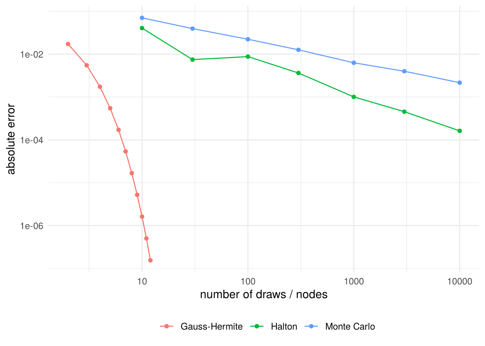

| m | node | weight |
|---|---|---|
| 2 | 0.707107 | 0.886227 |
| 3 | 0.000000 | 1.181636 |
| 3 | 1.224745 | 0.295409 |
| 4 | 0.524648 | 0.804914 |
| 4 | 1.650680 | 0.081313 |
| 5 | 0.000000 | 0.945309 |
| 5 | 0.958572 | 0.393619 |
| 5 | 2.020183 | 0.019953 |
3 Simulation-Based Estimation
\[ \newcommand{\bm}[1]{\boldsymbol{#1}} \newcommand{\btheta}{\boldsymbol{\theta}} \newcommand{\bbeta}{\boldsymbol{\beta}} \newcommand{\bgamma}{\boldsymbol{\gamma}} \newcommand{\bx}{\boldsymbol{x}} \newcommand{\by}{\boldsymbol{y}} \newcommand{\bX}{\boldsymbol{X}} \newcommand{\bR}{\boldsymbol{R}} \newcommand{\br}{\boldsymbol{r}} \newcommand{\bh}{\boldsymbol{h}} \newcommand{\bz}{\boldsymbol{z}} \newcommand{\bZ}{\boldsymbol{Z}} \newcommand{\bW}{\boldsymbol{W}} \newcommand{\bA}{\boldsymbol{A}} \newcommand{\bV}{\boldsymbol{V}} \newcommand{\bu}{\boldsymbol{u}} \newcommand{\bw}{\boldsymbol{w}} \newcommand{\bpsi}{\boldsymbol{\psi}} \newcommand{\balpha}{\boldsymbol{\alpha}} \newcommand{\bdelta}{\boldsymbol{\delta}} \newcommand{\bmu}{\boldsymbol{\mu}} \newcommand{\bg}{\boldsymbol{g}} \newcommand{\bS}{\boldsymbol{S}} \newcommand{\bD}{\boldsymbol{D}} \newcommand{\bI}{\boldsymbol{I}} \newcommand{\E}{\mathbb{E}} \newcommand{\Var}{\operatorname{Var}} \newcommand{\AVar}{\operatorname{Avar}} \newcommand{\cvp}{\xrightarrow{\;p\;}} \newcommand{\cvd}{\xrightarrow{\;d\;}} \newcommand{\iid}{\overset{\text{iid}}{\sim}} \newcommand{\KLIC}{\operatorname{KLIC}} \newcommand{\pd}[2]{\frac{\partial #1}{\partial #2}} \]
Readings
Many likelihood functions and moment conditions contain integrals without a closed form: random effects in nonlinear panel models, random coefficients, unobserved heterogeneity, multinomial probit choice probabilities. This chapter shows how to approximate such integrals, deterministically by quadrature or stochastically by simulation, and what happens to the statistical properties of an estimator when the exact integral is replaced by an approximation. The last section uses the same simulation idea for inference: the bootstrap.
3.1 Integrals in econometric models
Two examples recur.
Random effects. In a panel with individual effect \(c_i\sim g(c\mid\boldsymbol\eta)\), the likelihood contribution of individual \(i\) is \[ f(\bm y_i\mid\bX_i;\bbeta,\boldsymbol\eta)=\int f(\bm y_i\mid\bX_i,\bbeta,c)\,g(c\mid\boldsymbol\eta)\,dc , \] a one-dimensional integral for every \(i\) and every trial value of the parameters.
Discrete choice. In a multinomial probit with \(m\) alternatives the choice probability is an \((m-1)\)-dimensional integral of a multivariate normal density over a rectangle.
In both cases the object we need is an expectation, \[ I=\E[h(X)]=\int h(x)\,g(x)\,dx,\qquad X\sim g , \tag{3.1}\] where \(h\) and \(g\) are known for given parameter values. A plain integral \(\int_a^b f(x)\,dx\) is the special case \(h=(b-a)f\) and \(g\) the uniform density on \([a,b]\).
3.2 Deterministic integration: quadrature
Quadrature approximates an integral by a weighted sum of function values at chosen nodes \(x_j\) with weights \(\omega_j\), \[ \hat I=\sum_{j=1}^m\omega_j\,f(x_j). \]
Newton–Cotes rules use equally spaced nodes on \([a,b]\). The midpoint rule evaluates \(f\) at the midpoints of \(n\) intervals with weights \((b-a)/n\); the trapezoidal rule averages the function values at the two ends of each interval; Simpson’s rule fits a quadratic through three neighbouring points. Their error shrinks at a polynomial rate in \(n\) (e.g. \(n^{-2}\) for the midpoint rule if \(f''\) is bounded).
Gaussian quadrature chooses nodes and weights optimally for a given weight function \(w(x)\): \[
\int_c^d w(x)\,r(x)\,dx\approx\sum_{j=1}^m\omega_j\,r(x_j).
\] With \(m\) nodes the rule is exact if \(r\) is a polynomial of degree \(2m-1\) or less. Nodes and weights are tabulated and available in software (statmod::gauss.quad in R). The common cases are Gauss–Legendre (\(w=1\) on \([-1,1]\)), Gauss–Laguerre (\(w=e^{-x}\) on \((0,\infty)\)) and Gauss–Hermite (\(w=e^{-x^2}\) on \(\mathbb R\)).
Example 3.1 (Gauss–Hermite for a normal expectation) Let \(X\sim N(\mu,\sigma^2)\). The substitution \(x=\mu+\sqrt2\sigma z\) gives \[
\E[h(X)]=\int h(x)\frac{1}{\sqrt{2\pi}\sigma}e^{-(x-\mu)^2/(2\sigma^2)}dx=\frac{1}{\sqrt\pi}\int e^{-z^2}h(\mu+\sqrt2\sigma z)\,dz\approx\frac{1}{\sqrt\pi}\sum_{j=1}^m\omega_j\,h(\mu+\sqrt2\sigma z_j).
\] In the random effects probit with \(c_i\sim N(0,\sigma_c^2)\) this gives the likelihood contribution \(\ell_i\approx\pi^{-1/2}\sum_j\omega_jf(\bm y_i\mid\bX_i,\bbeta,\sqrt2\sigma_cz_j)\), which is how xtprobit in Stata computes it.
Choosing \(m\). There is a trade-off between speed and accuracy. In practice one re-estimates with more nodes and checks that the results do not change (Stata’s quadchk).
Many dimensions. A \(d\)-dimensional integral can be handled by a product rule, applying a one-dimensional rule in each coordinate. This needs \(m^d\) function evaluations: with \(m=10\) nodes and \(d=5\) dimensions already \(10^5\) per observation. This curse of dimensionality is the main reason to simulate.
3.3 Monte Carlo integration
The integral in Equation 3.1 is a population mean. Draw \(x_1,\dots,x_S\) independently from \(g\) and use the sample mean: \[ \hat I_S=\frac1S\sum_{s=1}^Sh(x_s). \]
Theorem 3.1 (Direct Monte Carlo integration) If \(\E|h(X)|<\infty\), then \(\hat I_S\) is unbiased, \(\E[\hat I_S]=I\), and \(\hat I_S\cvp I\) as \(S\to\infty\). If moreover \(\sigma_h^2=\Var(h(X))<\infty\), \[ \Var(\hat I_S)=\frac{\sigma_h^2}{S},\qquad \sqrt S(\hat I_S-I)\cvd N(0,\sigma_h^2). \]
These are the WLLN and the CLT applied to the draws. Three consequences:
- The simulation standard error \(\hat\sigma_h/\sqrt S\), with \(\hat\sigma_h\) the standard deviation of the \(h(x_s)\), is computed from the same draws. Report it.
- The error shrinks at rate \(S^{-1/2}\) whatever the dimension of \(X\). This is why simulation wins in high dimensions, and loses to quadrature in one or two smooth dimensions.
- Halving the error requires four times as many draws.
Draws from \(g\) are usually generated from uniforms by the inverse transform: if \(U\sim U(0,1)\) and \(G\) is the cdf of \(X\), then \(G^{-1}(U)\sim G\).
Example 3.2 (A normal expectation with a known answer) Let \(X\sim N(0,1)\) and \(I=\E[\Phi(0.5+X)]\). Since \(\Phi(0.5+X)=P(Z\le0.5+X\mid X)\) for an independent \(Z\sim N(0,1)\), \(I=P(Z-X\le0.5)=\Phi(0.5/\sqrt2)=0.638163\). Figure 3.1 compares Monte Carlo, Halton draws (Section 3.3.2) and Gauss–Hermite quadrature. Computer Tutorial 3 asks you to reproduce it.
3.3.1 Variance reduction
The variance \(\sigma_h^2/S\) can be reduced without more draws by using draws that are not independent or not from \(g\).
Importance sampling. Rewrite the integral with a proposal density \(p\) that is positive wherever \(h g\neq0\): \[ I=\int\frac{h(x)g(x)}{p(x)}\,p(x)\,dx=\E_p[w(X)h(X)],\qquad w(x)=\frac{g(x)}{p(x)},\qquad \hat I_{IS}=\frac1S\sum_{s=1}^Sw(x_s)h(x_s),\quad x_s\sim p . \] \(\hat I_{IS}\) is unbiased for any valid \(p\), but its variance depends on \(p\). A good proposal puts its mass where \(|h(x)|g(x)\) is large and avoids huge weights. If \(h\ge0\), the choice \(p\propto hg\) would give zero variance; it is infeasible, because its normalizing constant is \(I\), but it shows the direction. Importance sampling is the natural tool for small probabilities and for densities that are hard to draw from.
Example 3.3 (A tail probability) For \(Y\sim N(0,1)\), \(p_0=P(Y\ge3)=0.00135\). With \(S=100\) direct draws, the estimate is zero in \((1-p_0)^{100}\approx0.874\) of all samples. With the proposal \(N(\mu,1)\) the weight is \(w(y)=\phi(y)/\phi(y-\mu)=e^{-\mu y+\mu^2/2}\) and \[ \E_p\big[w(Y)^2\mathbf 1\{Y\ge3\}\big]=e^{\mu^2}\big(1-\Phi(3+\mu)\big), \] so the simulation standard deviation with \(S=100\) falls from 0.00367 (\(\mu=0\)) to 3.09^{-4} (\(\mu=4\)) and 2.48^{-4} (\(\mu=3\)). Problem Set 3 derives this.
Antithetic draws. If \(g\) is symmetric around zero, pair each draw \(x_s\) with \(-x_s\) (for uniforms: \(u_s\) with \(1-u_s\)) and average \(\frac12[h(x_s)+h(-x_s)]\). With \(S\) pairs, i.e. \(2S\) function evaluations, \[ \Var(\hat I_{anti})=\frac{1}{2S}\Big[\sigma_h^2+\operatorname{Cov}\big(h(X),h(-X)\big)\Big], \] compared with \(\sigma_h^2/(2S)\) for \(2S\) independent draws. Antithetic draws help if the covariance is negative, which is the case for monotone \(h\).
3.3.2 Quasi-random draws
Pseudo-random draws cluster by chance and leave gaps. Quasi-random (low-discrepancy) sequences are deterministic and fill \([0,1]\) evenly; they are transformed to the target distribution by the inverse cdf. The leading example is the Halton sequence. For a prime base \(b\), write \(i=\sum_k a_kb^k\) in base \(b\) and reflect the digits about the decimal point: \(\varphi_b(i)=\sum_k a_kb^{-k-1}\). For \(b=3\) the sequence starts \[ \tfrac13,\ \tfrac23,\ \tfrac19,\ \tfrac49,\ \tfrac79,\ \tfrac29,\ \tfrac59,\ \tfrac89,\ \dots \] Each new block of points falls into the gaps left by the previous ones.
# Halton sequence in base b (equivalent to randtoolbox::halton for dim = 1, b = 2)
halton_seq <- function(n, base = 2, skip = 0) {
sapply(seq_len(n) + skip, function(i) {
f <- 1; r <- 0
while (i > 0) { f <- f / base; r <- r + f * (i %% base); i <- i %/% base }
r
})
}
round(halton_seq(8, base = 3), 3)#> [1] 0.333 0.667 0.111 0.444 0.778 0.222 0.556 0.889For smooth integrands in low dimensions the error of quasi-Monte Carlo is close to \(1/S\) instead of \(1/\sqrt S\). In \(d\) dimensions one uses a different prime for each coordinate; with many dimensions the coordinates of the early points become correlated, and scrambled or randomized versions are preferred. In estimation, one long sequence is generated and consecutive blocks are used for different observations; the first points are often discarded.

The figure shows the three rates: the Monte Carlo error falls by about one decimal for a hundredfold increase in \(S\), Halton draws roughly ten times faster, and Gauss–Hermite reaches machine precision with about a dozen nodes, because the integrand is smooth and one-dimensional.
3.4 Maximum simulated likelihood
Suppose the density of \(\bm y_i\) given \(\bx_i\) is an integral over unobservables \(\bm u\) with known density \(g\), \[ f(\bm y_i\mid\bx_i;\btheta)=\int\tilde f(\bm y_i\mid\bx_i,\bm u;\btheta)\,g(\bm u)\,d\bm u . \] Draw \(\bm u_{i1},\dots,\bm u_{iS}\) from \(g\) for each \(i\) and replace \(f\) by the unbiased simulator \(\hat f_i(\btheta)=S^{-1}\sum_s\tilde f(\bm y_i\mid\bx_i,\bm u_{is};\btheta)\).
Definition 3.1 (Maximum simulated likelihood estimator) \[ \hat\btheta_{MSL}=\arg\max_{\btheta}\ \frac1n\sum_{i=1}^n\ln\hat f_i(\btheta),\qquad \hat f_i(\btheta)=\frac1S\sum_{s=1}^S\tilde f(\bm y_i\mid\bx_i,\bm u_{is};\btheta). \]
If the distribution of \(\bm u\) depends on parameters (e.g. \(c_i\sim N(0,\sigma_c^2)\)), write \(\bm u=\bm u(\bm\varepsilon;\btheta)\) with draws \(\bm\varepsilon\) from a fixed distribution (\(c_{is}=\sigma_c\varepsilon_{is}\) with \(\varepsilon_{is}\sim N(0,1)\)).
Keep the draws fixed. The draws are generated once, before the optimization, and reused for every evaluation of the objective and its derivatives. New draws at every iteration would make the simulated likelihood jump between iterations and the optimizer fail to converge.
Simulation bias. \(\hat f_i\) is unbiased for \(f_i\), but the log is concave, so by Jensen’s inequality \(\E[\ln\hat f_i]<\ln f_i\). A second-order expansion gives \[ \E\big[\ln\hat f_i(\btheta)\big]\approx\ln f_i(\btheta)-\frac{1}{2S}\frac{\Var\big(\tilde f(\bm y_i\mid\bx_i,\bm u;\btheta)\big)}{f_i(\btheta)^2}. \] The bias term depends on \(\btheta\), so it shifts the maximizer: with fixed \(S\), MSL is inconsistent.
Theorem 3.2 (Asymptotics of MSL (Cameron and Trivedi 2005, Ch. 12)) Under the regularity conditions for ML and with independent draws across observations:
- If \(S\to\infty\) as \(n\to\infty\), \(\hat\btheta_{MSL}\) is consistent.
- If \(\sqrt n/S\to0\), \(\hat\btheta_{MSL}\) is asymptotically equivalent to the (infeasible) MLE: \(\sqrt n(\hat\btheta_{MSL}-\btheta_0)\cvd N(\bm0,\mathcal I(\btheta_0)^{-1})\).
In practice \(S\) is chosen by experimentation: increase \(S\) (and use Halton draws) until the estimates stop changing. Standard errors are computed as for ML, from the Hessian or the sandwich of the simulated log-likelihood; with \(S\) large enough the simulation adds nothing to first order.
3.5 Method of simulated moments
If the moment function contains an integral, \(\bpsi(\bw_i,\btheta)=\int\tilde\bpsi(\bw_i,\bm u;\btheta)g(\bm u)\,d\bm u\), replace it by the simulator \(\hat\bpsi_i(\btheta)=S^{-1}\sum_s\tilde\bpsi(\bw_i,\bm u_{is};\btheta)\) and apply (G)MM to \(\frac1n\sum_i\hat\bpsi_i(\btheta)\) (McFadden 1989; Pakes and Pollard 1989).
The key difference to MSL: the simulator enters the objective linearly. Since \(\E[\hat\bpsi_i(\btheta_0)]=\E[\bpsi(\bw_i,\btheta_0)]=\bm0\), the simulated moment condition still holds at \(\btheta_0\).
Theorem 3.3 (Properties of MSM) If the GMM estimator based on \(\bpsi\) is consistent and asymptotically normal and the draws are independent across \(i\) and of the data, then for fixed \(S\) the MSM estimator is consistent and asymptotically normal. Its asymptotic variance is that of GMM plus a term due to simulation noise, which vanishes as \(S\to\infty\). With \(S\) independent draws per observation, simulation adds \(\E\big[\Var(\tilde\bpsi\mid\bw_i)\big]/S\) to the variance \(\bV_0\) of the moment function.
| MSL | MSM | |
|---|---|---|
| Consistent with fixed \(S\) | no | yes |
| Efficient as \(S\to\infty\) | yes, if \(\sqrt n/S\to0\) | only if the moments are the efficient ones |
| Cost of small \(S\) | bias | variance |
Example 3.4 (Unobserved heterogeneity (Cameron and Trivedi 2005, Ch. 12)) Let \(y_i=\theta+u_i+\varepsilon_i\) with \(\varepsilon_i\sim N(0,1)\) and \(u_i\) standard Gumbel (extreme value type I), \(g(u)=e^{-u}\exp(-e^{-u})\), independent. The density of \(y_i\), \[ f(y_i;\theta)=\int\phi(y_i-\theta-u)\,g(u)\,du, \] has no closed form. With draws \(u_{is}\) from \(g\):
- MSL maximizes \(\frac1n\sum_i\ln\big[\frac1S\sum_s\phi(y_i-\theta-u_{is})\big]\).
- MSM uses \(\E[y_i-\theta-u_i]=0\) with \(\E[u_i]\) replaced by the simulated mean, \(\hat\theta_{MSM}=\bar y-\frac{1}{nS}\sum_i\sum_su_{is}\).
(Here \(\E[u_i]\) is in fact known, Euler’s constant \(\gamma\approx0.5772\), so MM is feasible; the example is chosen so that we can compare.)
rgumbel <- function(n) -log(-log(runif(n)))
msl <- function(y, u) { # u: n x S matrix of draws
obj <- function(th) mean(log(rowMeans(dnorm(y - th - u))))
optimize(obj, c(-5, 5), maximum = TRUE)$maximum
}
msm <- function(y, u) mean(y) - mean(u)
set.seed(2027)
one_sample <- function(S, n = 100, theta = 1) {
y <- theta + rgumbel(n) + rnorm(n)
u <- matrix(rgumbel(n * S), n, S) # draws fixed before optimizing
c(msl = msl(y, u), msm = msm(y, u))
}
tab <- t(sapply(c(1, 2, 5, 20, 100, 1000), function(S) {
r <- replicate(1000, one_sample(S))
c(S = S, bias_MSL = mean(r["msl", ]) - 1, sd_MSL = sd(r["msl", ]),
bias_MSM = mean(r["msm", ]) - 1, sd_MSM = sd(r["msm", ]))
}))
knitr::kable(round(tab, 3))| S | bias_MSL | sd_MSL | bias_MSM | sd_MSM |
|---|---|---|---|---|
| 1 | -0.005 | 0.205 | -0.005 | 0.205 |
| 2 | 0.145 | 0.191 | -0.006 | 0.180 |
| 5 | 0.134 | 0.183 | -0.006 | 0.170 |
| 20 | 0.065 | 0.165 | -0.004 | 0.162 |
| 100 | 0.016 | 0.166 | -0.007 | 0.173 |
| 1000 | 0.003 | 0.154 | -0.001 | 0.162 |
The table illustrates Theorem 3.2 and Theorem 3.3:
- MSM is unbiased for every \(S\); its standard deviation falls towards the MM value \(\sqrt{(1+\pi^2/6)/n}=0.163\). With independent draws, \(\Var(\hat\theta_{MSM})=[1+\pi^2/6+\pi^2/(6S)]/n\) (Problem Set 3, Problem 4, derives the analogous result for an exponential shock).
- MSL has a sizeable bias for small \(S\) that disappears only as \(S\) grows. With many draws it is slightly more precise than MSM, because it uses the whole likelihood.
- With \(S=1\) MSL and MSM coincide here: \(\ln\phi\) is quadratic, so the first-order condition is linear in \(\theta\). This is special to the example.
3.6 The bootstrap
Simulation is also useful for inference. The asymptotic variance of many estimators is tedious to derive (two-step estimators, sample quantiles, functions of several estimates). The nonparametric bootstrap (Efron 1979) approximates the sampling distribution of an estimator \(\hat\theta=T(\bw_1,\dots,\bw_n)\) by resampling the data:
- Draw a bootstrap sample \(\bw_1^*,\dots,\bw_n^*\) of size \(n\) with replacement from the observed data (in a regression: resample whole observations \((y_i,\bx_i)\), the pairs bootstrap).
- Compute \(\hat\theta^*_b=T(\bw_1^*,\dots,\bw_n^*)\), using exactly the same procedure as for \(\hat\theta\), including all estimation steps.
- Repeat for \(b=1,\dots,B\).
The bootstrap standard error is the standard deviation of \(\hat\theta^*_1,\dots,\hat\theta^*_B\). The percentile confidence interval uses the \(\alpha/2\) and \(1-\alpha/2\) quantiles of the \(\hat\theta_b^*\). \(B\) of a few hundred suffices for standard errors; percentile intervals need more (\(B\ge999\)).
The logic: the empirical distribution of the data is to the sample what the population is to the data. If \(\hat\theta\) is asymptotically normal and smooth in the empirical distribution, the bootstrap distribution of \(\sqrt n(\hat\theta^*-\hat\theta)\) approximates that of \(\sqrt n(\hat\theta-\theta_0)\) (Cameron and Trivedi 2005, Ch. 11).
Example 3.5 (Standard error of a sample median) For a sample of \(n=200\) from a lognormal distribution, the asymptotic variance of the median \(m\) is \(1/(4f(m)^2n)\), which needs an estimate of the density at the median. The bootstrap avoids this:
set.seed(2027)
y <- exp(rnorm(200))
bt <- replicate(999, median(sample(y, replace = TRUE)))
c(median = median(y), se_boot = sd(bt),
se_asymptotic = 1 / (2 * dlnorm(1) * sqrt(200))) # uses the true density#> median se_boot se_asymptotic
#> 0.99025928 0.09515879 0.08862269quantile(bt, c(0.025, 0.975)) # percentile 95% CI#> 2.5% 97.5%
#> 0.853481 1.197444The bootstrap standard error is close to the asymptotic one, which here uses the true density at the true median and would not be available in practice.
When it fails. The bootstrap is not a cure-all. It fails or needs modification for non-smooth or boundary problems (the maximum of a sample, parameters on the boundary of the parameter space), with weak instruments, and with dependent data, where whole blocks or clusters have to be resampled. In Computer Tutorial 2 we already used it for the two-step IPW estimator: there the bootstrap must re-estimate the propensity score in every replication.
3.7 Computer tutorial 3
Learning goals. Approximate an integral by Monte Carlo, quasi-random draws and Gaussian quadrature and compare their accuracy; implement maximum simulated likelihood and the method of simulated moments and see the simulation bias of MSL; compute bootstrap standard errors and confidence intervals and check their coverage.
Packages. statmod (Gaussian quadrature); optionally randtoolbox (Halton sequences). No data set: all data are simulated.
3.7.1 Problem 1: Three ways to compute an integral
Let \(X\sim N(0,1)\) and \(I=\E[\Phi(0.5+X)]\), where \(\Phi\) is the standard normal cdf.
Show that \(I=\Phi(0.5/\sqrt2)\). Hint: write \(\Phi(0.5+X)=P(Z\le0.5+X\mid X)\) for \(Z\sim N(0,1)\) independent of \(X\).
Write a function
mc_int(S)that approximates \(I\) by direct Monte Carlo integration with \(S\) draws and returns the estimate together with its simulation standard error. Evaluate it for \(S=10,100,1000,10000\).Approximate \(I\) with \(S\) Halton draws (base 2), transformed to \(N(0,1)\) by the inverse cdf. Use the function
halton_seq()from Section 3.3.2 of the lecture notes orrandtoolbox::halton(). Compare the errors with (b).Approximate \(I\) by Gauss–Hermite quadrature with \(m=2,3,5,10,20\) nodes (
statmod::gauss.quad(m, kind = "hermite")). Mind the change of variables in Example 3.1 of the lecture notes.Use antithetic pairs \((x_s,-x_s)\) with \(S/2\) pairs. Is the variance smaller than with \(S\) independent draws? Why?
3.7.2 Problem 2: MSL and MSM with unobserved heterogeneity
Consider the model of Example 3.4 of the lecture notes: \(y_i=\theta+u_i+\varepsilon_i\) with \(\varepsilon_i\sim N(0,1)\) and \(u_i\) standard Gumbel, independent, \(\theta_0=1\).
Generate a sample of \(n=100\). Draw Gumbel variables by the inverse transform \(u=-\ln(-\ln U)\), \(U\sim U(0,1)\).
Write the simulated log-likelihood as a function of \(\theta\) and of an \(n\times S\) matrix of draws. Compute \(\hat\theta_{MSL}\) for \(S=1,10,100,1000\). Why must the draws be generated before the optimization?
Compute \(\hat\theta_{MSM}\) for the same \(S\), and the MM estimator \(\bar y-\gamma\), which uses the known mean \(\gamma=0.5772\) of the Gumbel distribution.
Repeat (b) with Halton draws: take one long Halton sequence, discard the first 10 points, and use consecutive blocks of \(S\) points for the observations.
Monte Carlo: for \(S=2\) and \(S=50\), repeat (a)–(c) 300 times and report the mean and standard deviation of \(\hat\theta_{MSL}\) and \(\hat\theta_{MSM}\). Relate the results to Theorems 3.2 and 3.3 of the lecture notes.
3.7.3 Problem 3: Bootstrap standard errors and confidence intervals
Draw a sample of \(n=200\) from a lognormal distribution, \(y_i=e^{z_i}\) with \(z_i\sim N(0,1)\). The population median is \(1\).
Compute the bootstrap standard error of the sample median with \(B=999\) and the 95% percentile confidence interval.
Check the coverage of the percentile interval: repeat (a)–(b) 300 times with \(B=299\) and count how often the interval contains 1.
Do the same for the sample maximum as an estimator of the upper end of the support of a \(U(0,1)\) distribution. What goes wrong?
3.8 Exercises
Problem Set 3 contains the analytical exercises for this chapter:
- Problem 1: Monte Carlo integration of \(\int_0^1xe^x\,dx\), the number of draws needed for a given precision, and antithetic draws.
- Problem 2: importance sampling for a normal tail probability.
- Problem 3: Gauss–Hermite quadrature and exactness for polynomials.
- Problem 4: MSL and MSM in the unobserved-heterogeneity model of Example 3.4, with an exponential instead of a Gumbel shock, for which the exact likelihood is available as a benchmark.